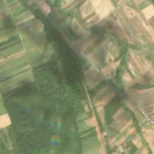
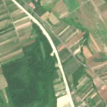

5,6 ha de pădure schimbată lângă Constantin Daicoviciu
Între vara lui 2025 și 17 aprilie 2026, pe aproximativ 5,6 ha de pădure din comuna Sacu, lângă Constantin Daicoviciu, județul Caraș-Severin, imaginile Sentinel-2 arată că vegetația a dispărut sau s-a schimbat puternic. Nu pare o tăiere de lemn.
Autorizația de tăiere
nu e tăiere de pădure
Schimbarea nu pare tăiere de lemn, așa că autorizațiile de tăiere nu se aplică. E o lucrare, nu o exploatare de lemn: drum, cale ferată, linie electrică, conductă, carieră sau șantier.
Ce se vede în poze: În poza «după» se vede o fâșie lată, albă, care taie zona marcată și continuă mult în afara ei, peste câmpuri, ca un nou nasip de cale ferată sau drum. Aceasta este o lucrare de construcții, nu o tăiere de pădure.


Înainte și după: Copernicus Sentinel-2, 10 m pe pixel, conturul zonei cu portocaliu. Poza detaliată (Esri World Imagery) e de acum 1–4 ani: arată ce era acolo înainte, nu tăierea.
Pe scurt
- Identificator
- 20260417_45555_22136
- Locul
- Constantin Daicoviciu, comuna Sacu, județul Caraș-Severin (SIRUTA 53755)
- Coordonate (centru)
- 45.55597, 22.13499 · Google Maps · OpenStreetMap
- Suprafața
- 5,6 ha (din pixeli de 10 m; ± câțiva pixeli pe margine)
- Pădurea întreagă
- în vara lui 2025 (de atunci, nori sau iarnă)
- Prima imagine cu schimbarea
- 17 aprilie 2026
- Imagini în care se vede schimbarea
- 12
- Cât de sigur e semnalul din satelit
- scăzută
- Autorizația cea mai apropiată
- APV 2500139800290 · Ocolul Silvic Ana Lugojana, valabilă 9 mai 2025 – 11 iulie 2025, la 23 m de zonă
- Terenul
- în afara amenajamentelor silvice publicate (pășune, mal de apă sau pădure privată fără amenajament în registru)
- Garda Forestieră
- Timișoara
Dacă vrei să verifici sau să sesizezi
- Pădurile din județul Caraș-Severin sunt în grija Gărzii Forestiere Timișoara, care controlează tăierile și dă amenzile.
- Autorizația găsită în zonă e emisă de Ocolul Silvic Ana Lugojana.
- Formularul Gărzii Forestiere Naționale primește sesizări și fără nume. Trimite linkul acestei pagini, coordonatele și pozele. Dacă tăierea e în desfășurare, sună la 112.
- Autorizațiile și transporturile de lemn se pot căuta în Inspectorul Pădurii.
Pagina arată ce se vede din satelit și ce scrie în registrul public; nu e o dovadă în sine.
Cum citezi zona
Linkul acestei pagini nu se schimbă. Dacă zona iese vreodată de pe hartă, pagina rămâne, cu data și cu ce știam despre ea.
Pădurea RO, zona 20260417_45555_22136: 5,6 ha, Constantin Daicoviciu, comuna Sacu, județul Caraș-Severin; schimbare văzută din satelit între vara lui 2025 și 17 aprilie 2026. https://iliemihai.github.io/padurea-ro/zona/20260417_45555_22136/ (consultat la [data]). Date: CC BY 4.0.
Datele zonei: GeoJSON · toate zonele: date deschise · licența CC BY 4.0.
Istoricul zonei pe hartă
Starea se poate schimba când registrul publică o autorizație sau când analistul vede poze mai bune. O ținem aici, ca un link citat să arate și ce spuneam atunci.
Pe hartă cel târziu din 5 noiembrie 2026.
- 5 noiembrie 2026 – azi · nu e tăiere de pădure
Detalii tehnice, pentru verificare
De ce acest nivel de încredere:
- văzută schimbată în 12 imagini diferite
- peste 3 ha
- ultima dată am văzut-o intactă în vara lui 2025 (de atunci, nori sau zăpadă)
- fără părerea AI
Ce a văzut analistul cu context: Fâșia deschisă la culoare (balast/terasament) apare între 2025-08-30 și 2026-06-29, are margini netede și continuă peste 1 km prin parcele agricole, în afara conturului. Faptele o susțin: cale ferată în construcție în OSM la 0 m, formă alungită (938 m × 155 m, elongație 6,0) și permisul de tăiere la 23 m fără suprapunere (verdict nu_taiere). Pădurea dinainte era doar parțială (WorldCover 92% copaci, dar Hansen 11% în 2000, plus fâșii de câmp).
- Placa Sentinel-2
- 34TER
- NDVI de referință
- 0.86
- NBR de referință
- 0.64
- Scăderea în pădurea din jur
- 0.06
- Persistență
- 0.98
- NDVI / NBR după
- 0.246 / 0.034
- Analistul cu context (model)
- santier · 0.85
Cum se calculează fiecare: metodologia.
Pune harta zonei într-un articol
Copiază codul în articol (merge în majoritatea site-urilor de știri). Sau pune doar linkul: WhatsApp, Facebook și X arată singure poza zonei.